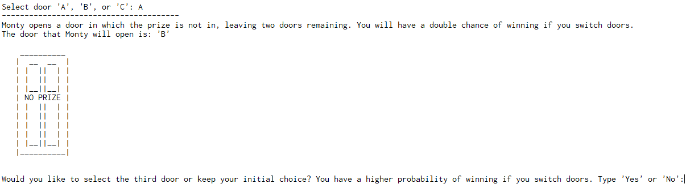

The Application:
A quick overview:
Originating from the famous TV Show 'Let's make a deal,' the Monty Hall Problem is a probability game named after the show's host, Monty Hall. The player begins by choosing a door.
Then Monty follows by opening a door in which he knows the prize is behind. With one door left, Monty asks the player if they want to switch doors, increasing their probability of getting the prize to 2/3 from their previous door at 1/3.
Monty then opens the doors and reveals where the prize was.
Walk Through (With Images):
Firstly, the player is asked which door they want to choose.

After choosing, Monty opens a door which is not the correct one. He then asks the player if they want to switch doors.
Monty then reveals the final results.